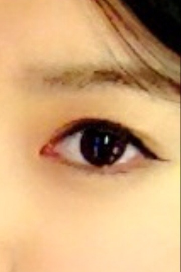
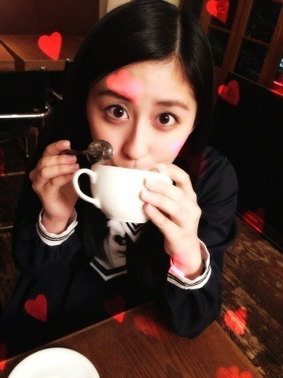

| 2013/04 19 Fri | はしゃいでるよ、いま(´>∀<｀)ゝ |
ちはるーむへようそこ\( ˆoˆ )/
愛未の帽子。
そして慣れない三つ編み。

ちょっと写真の画質的にも
わかりにくすぎたのかもしれないが
コメントが減っていた(´;ω;`)
もっとコメントしてくれるような
楽しいブログ、頑張ります！！
集計結果！
1位 せいたん
2位 愛未
3位 まいやん
4位 ろってぃ
5位 みさみさ
6位 ななせまる
7位 りんご
7位 かずみん
7位 まりか
10位 みなみ
10位 みくも
10位 とまと
13位 若月
13位 かなりん
13位 ななみん
13位 らりん
13位 れいか
18位 ゆきな
18位 まいまい
18位 ひめたん
という結果になりましたーd=(^o^)=b
今回はさほど差がなかったよ！
全体的に！
とゆことで！
結果は！
この子やあっ！！
能條。愛未。じょーさん。
愛未が
早く愛未だしてよ～
ってずっと言ってるから
やっとのことで出したよ！笑(`･ω･´)
ちなみに半分すっぴんだったんだってこの時！
じゃあ次はこの子！

誰でしょう？
きれいな目してるなー♡
朝日新聞さんの 乃木坂choice、
で気になる記事が公開されました。ヾ(*･∀･*)ﾉﾞ
大好きな考古学についての記事について語らせてもらいました！
ナスカの地上絵が新しく発見されたみたい！なんという！
ロマンを感じるぜっっ
朝日新聞デジタルのサイトで読めるのでよかったら読んでみてください\( ˆoˆ )/
GIRL POPさんの
のびのび、乃木坂！
前回はまいまいと、ななせまるとラテアートを体験(`･ω･´)

1番上と1番下がちはる作、
右2つがまいまい作、
左2つがななせまる作！
うちは変な丸い生物と
ごっついうさぎを作りました。笑
初めてにしては上手って褒められてしまったヾ(*･∀･*)ﾉﾞ
嬉しかったヾ(*･∀･*)ﾉﾞ
うっしゃヾ(*･∀･*)ﾉﾞ
作ったあとは、普段コーヒーとかラテとか飲んだことあんまりないんだけど
自分が作ったのだと愛着湧いたのかわからんけど
全部飲み干しました♡♡
小学校の頃のコーヒー牛乳とかも残してたのに！
進化した！

あ、ちはるさん。
人中が気になるご様子。笑( ꒪⌓꒪ )
次回ののびのび乃木坂は～っ
美文字講座！！
まいまい、ななせまる、ちはるで撮ってきたよ

見てくれたら嬉しい！！
そして、今日はある雑誌の撮影でした\( ˆoˆ )/
初のファッションページもあったから完成が楽しみだよ

また言えるようになったら言う！
待っとってー！
なんか、外仕事の話ができる事が嬉しいd=(^o^)=b
すっごくすっごく嬉しいd=(^o^)=b
もっとたくさん言えるようになりたい！！！
明日は全国握手会、明後日は個別握手会！
in 京都！(p`･ω･´q)
選抜発表があるからいつもとちょっと違う握手会になると思いますよ！
逆に新鮮だね！
来てくれる方、待ってまーすd=(^o^)=b
ちゃんと来るんだよd=(^o^)=b
今日は川後と同じ部屋\( ˆoˆ )/
今は飛鳥と愛未の部屋に遊びにきてて楽しすぎるよ\( ˆoˆ )/笑
じゃねっ
ばいるんっ
るんるんっ
ちはるんっ
(´>∀<｀)ゝ
コメント(154)
2013/04/19 23:36